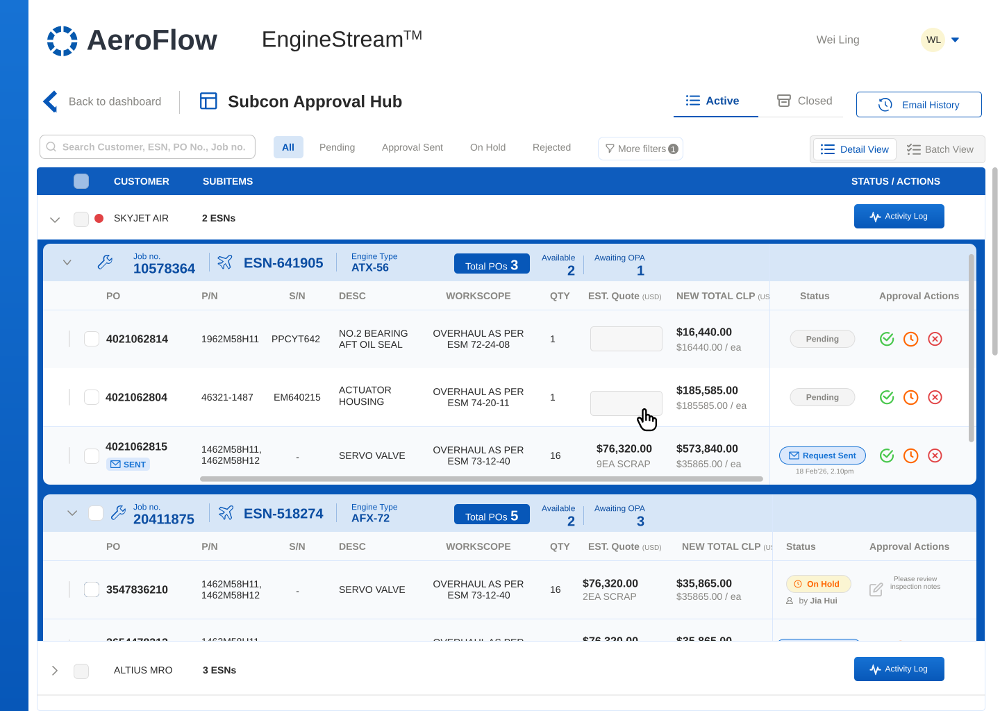
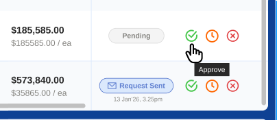
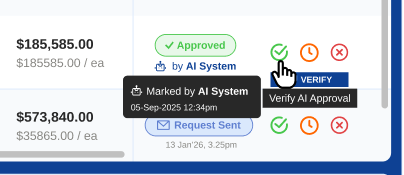
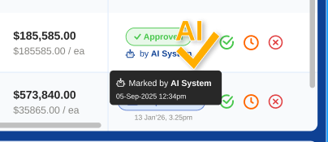
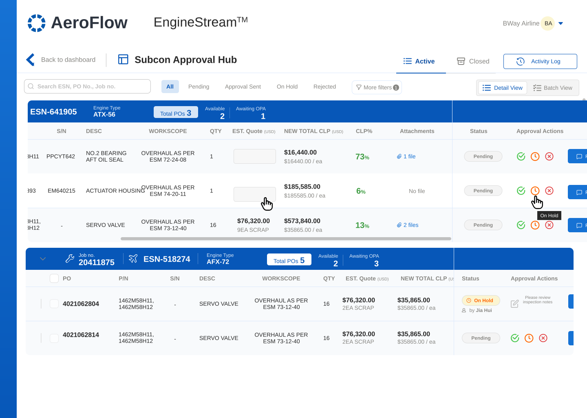
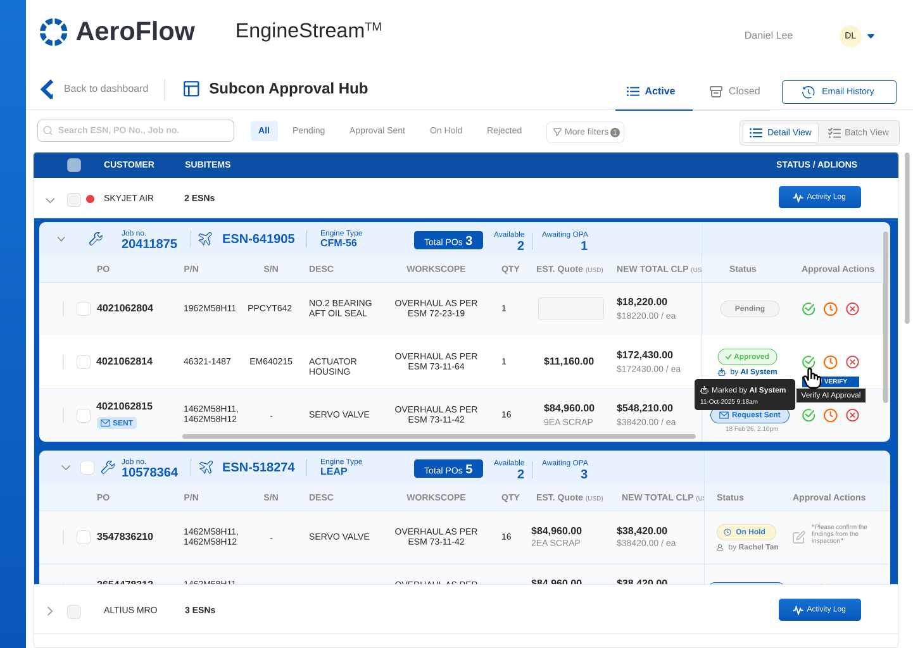

AEROSPACE · SALES · ENTERPRISE
Replacing Chaotic Vendor Email Chains
Confidentiality note: In line with applicable NDAs, all company names, client identities, proprietary part numbers, and live commercial data have been anonymized or generalized. The underlying workflow design, information architecture, and product thinking presented here are unaltered and authentic.

CS/Sales Staff · Internal, dual role
Airline Customer · Fleet Rep, external
Introducing AI into a high-stakes aerospace MRO workflow called for a gradual rollout, not a leap. Each phase hands the system a little more autonomy once the one before it has proven reliable.
Human digitization. CS/Sales staff log part decisions directly in the web app and upload .msg files for the audit trail, while customers follow engine progress through a dedicated portal.

AI verification (HITL). AI reads incoming email threads and pre-fills the likely decision. CS/Sales confirms each NLP read with a single approval click.

Full AI autonomy. AI records customer decisions straight from email and archives the .msg files to cloud storage automatically, no human step required.

UX rationale — a single-pane table over a multi-tab layout keeps every scrap part tied to its ESN. Sticky filters and color-coded status tags let staff move through dense part lists without losing their place.
UX rationale — the client view is kept separate from internal vendor margins and private notes. Customers get full transparency into decisions, while inbound status emails and inbox back-and-forth drop off significantly.

UX rationale — pairing AI-suggested statuses with inline verification controls lets staff quickly clear pre-parsed approvals once verified against customer correspondence — streamlining manual review as a bridge toward full AI autonomy.

| Operational Area | Before | After |
|---|---|---|
| Data Ingestion | Scattered Excel files & manual lookups | Live sync into one central web app |
| Decision Tracking | Digging through nested inboxes | One workbench with status tags per part |
| Customer Communication | Unstructured email, no status visibility | Dedicated portal for live tracking |
| Audit Backup (.msg) | Manual save, rename, local filing | Automatic archiving, fully traceable |
| CS/Sales Role | Manual data transcriber | AI verifier, moving toward account strategist |